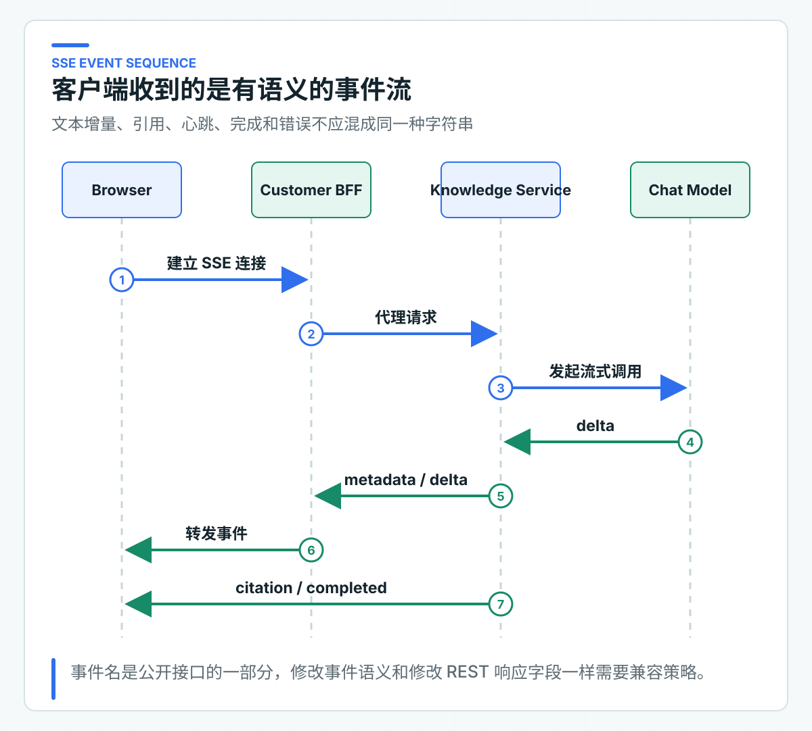
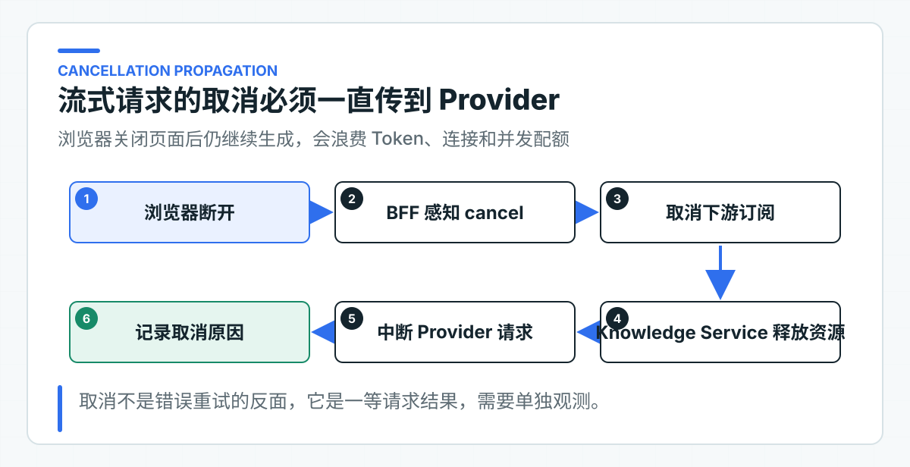

流式输出原理与实现：SSE、取消、心跳、断连和 TTFT
用户看到文字逐步出现，只是流式接口最表面的一层。服务端还要处理连接建立、心跳、引用、完成、异常和客户端断开；其中任何一个状态含糊，前端都可能一直转圈，或者把半段回答当成成功结果。
TTFT 表示首个 Token 到达时间（Time to First Token），它反映用户需要等多久才能看到第一段内容。项目用 SSE（Server-Sent Events，服务器发送事件）定义稳定的事件名和顺序。客户端断开时，取消信号继续传到上游模型。连接已经输出字节后，服务不会自动重试并再次发送答案开头。
选择 SSE，也要承担长连接成本
知识回答主要是服务端向客户端单向推送，客户端只需发起一次 HTTP 请求。SSE 使用普通 HTTP，也能被 Spring WebFlux 直接表达，适合文本回答场景。
WebSocket 更适合高频双向通信。若只是为了逐字显示答案，引入连接状态、双向协议和额外网关配置，收益不高。
浏览器原生 EventSource 只发起 GET 请求，并自带重连处理。项目需要提交较长的问题正文和 JSON 请求，因此使用 POST /api/v1/knowledge/answers/stream。
浏览器端要用 fetch 的 ReadableStream 或支持 POST 的 SSE 客户端解析 text/event-stream。取消、重连和游标传递也要由该客户端显式实现。
若必须使用原生 EventSource，可以先用 POST 创建短时请求，再用不含敏感问题正文的 GET 地址订阅结果。
SSE 的简单主要体现在客户端协议，不代表服务端可以忽略流式资源管理。每个流会长时占用一条 HTTP 连接，同时占用 Provider 并发、内存缓冲和 Token 预算。因此流式接口需要独立的并发上限、超时、取消和慢客户端处理。
事件名和顺序属于接口契约
AnswerStreamEvent 定义六类事件：
| 事件 | 用途 |
|---|---|
metadata |
先返回 Trace ID 和 Prompt 版本 |
delta |
返回增量文本 |
heartbeat |
长时间无 Token 时保持连接可见 |
citation |
返回模型声明、且通过本次上下文校验的引用 |
completed |
返回模型元数据、TTFT、拒答标记和拒答原因 |
error |
以稳定错误码结束事件流 |
前端不应根据某段 JSON 猜测事件类型。Knowledge Service OpenAPI 描述了 text/event-stream 响应和六类 payload 的 oneOf 结构。
当前 OpenAPI 没有把每一帧的 SSE event: 名与 payload Schema 结构化绑定。BFF 和客户端可以根据 Schema 生成或校验数据 DTO，事件名与 DTO 的对应关系仍要写在客户端代码中，并用兼容测试固定。

metadata 先于文本增量发送，让客户端从一开始就拿到 Trace ID 和 Prompt 版本。citation 在正文结束后发送，客户端不需要从 delta 文本解析引用。completed 表示这条流已经通过最终校验，并且回答已在业务上成功结束；HTTP 连接关闭本身不能代替完成事件。
completed 中的元数据也必须真实。当前链路在最后一个模型片段到达后仍拿不到 usage 时，会发送 error 并结束，不会用 0/0/0 伪装成成功完成。客户端可以保留已经收到的 delta，但必须把这次回答标记为不完整。拒答同样是成功结果：completed.refused=true，并且 refusalReason 不能为空。
先解析模型决策，再发送回答正文
模型返回的字符流不能直接变成客户端的 delta。否则回答已经显示到一半，服务端才发现模型引用了不存在的 sectionId，引用校验就失去了拦截价值。
项目要求模型先输出一段内部决策头，再输出给客户看的正文：
<answer-decision>{"citedSectionIds":["arrival-time"],"refused":false,"refusalReason":null}</answer-decision><answer-text>退款通常在 1 到 5 个工作日到账。
这段决策头不会进入 SSE。StreamingAnswerHeaderParser 会先缓冲它。Provider 可能把标签或 JSON 拆在任意两个网络分块之间，因此解析器不能假设“一个 chunk 就是一行完整 JSON”。只有决策头解析成功，并且其中的引用都属于本次 PolicyContext，正文才会作为 delta 向下游发送。
正文结束后，StreamingKnowledgeAnswerService 会组装完整的 ModelAnswerDraft。草稿包含文本、引用决策、拒答字段和模型元数据，然后交给与非流式回答相同的 KnowledgeAnswerValidator。未知引用或缺少决策会直接结束为 error；正文、usage 或业务动作校验失败时也不会发送 completed。
这里校验的是引用 ID 是否属于本次上下文，以及拒答结构是否完整。它不能仅凭一个合法 sectionId 证明答案中的每句话都由该片段支持，语义正确性还需要后续的 RAG 评测和高风险字段校验。
错误发生在尚未写出响应头时，服务仍可以返回标准 HTTP 错误。一旦 SSE 已经开始，HTTP 状态通常已经确定，后续错误只能通过 error 事件表达。这要求客户端同时理解连接级失败和事件级失败。
延迟和连接资源要分别治理
TTFT 单独反映首字等待
总延迟包含上下文加载、排队、模型首 Token 和剩余生成时间。用户对流式体验最敏感的是首个 Token 到达时间（Time to First Token，TTFT）。
StreamingKnowledgeAnswerService 在订阅开始时记时，第一个非空 delta 到达时记录首 Token 时间，完成事件中返回 ttftMillis。
如果没有任何 delta，TTFT 为 -1，而不是伪造 0。监控平台可以将这种情况与正常慢响应分开处理。
TTFT 还可以拆成应用排队、权限与上下文加载、连接 Provider、Provider 生成首 Token、网关刷新事件五段。只记录服务端收到首 Token 的时刻，不一定代表用户真正看到内容的时间。
这也是为什么需要端到端客户端指标。前端可以记录请求发出、连接建立、metadata 到达和首个 delta 渲染的时间。服务端 Trace 和客户端性能数据通过请求 ID 关联后，才能判断问题在模型、BFF、网关缓冲还是前端渲染。
总耗时和 TTFT 要分开设目标。一个长回答可能 TTFT 很短但总生成需要十几秒，用户仍然感觉系统在工作；另一个回答总耗时只有五秒，前四秒完全没有反馈，用户却容易重复提交或离开。产品体验、并发容量和 Token 成本需要同时看这两类指标。
当前知识回答即使拒答，也要输出一段面向用户的说明，因此成功拒答同样会产生首个 delta。若最终仍没有可见文本，ttftMillis=-1 只说明没有正文；由于完整回答校验要求正文非空，这条流会以 error 结束，而不会被统计成正常拒答。
断开连接要取消上游调用
WebFlux 的 Flux 订阅在客户端断开时会被取消。Spring AI 流式适配器直接返回上游 Flux<ChatResponse>，没有把数据先收集成完整字符串，因此取消信号可以继续向 Provider 客户端传播。
测试会订阅若干事件后主动取消，并验证上游收到取消。这个行为同时减少无效 Token 和连接占用。

取消链路中任何一层把 Flux 提前 collectList()、转成阻塞字符串或放进无界缓冲，都可能切断上游取消。BFF 作为流式代理时也要保持端到端响应式链路，不要为了便于改写响应而先缓存完整回答。
取消不应记录为普通服务错误。用户主动关闭页面、网络中断和应用超时产生的取消，对运维判断的含义不同。至少要单独统计正常完成、主动取消、上游错误和超时，否则大量用户中途离开会被误报成 Provider 故障。
处理心跳、慢客户端和代理超时
项目每 10 秒发送一次 heartbeat。它只说明连接仍存活，不改变回答状态，也不重置业务超时。网关、负载均衡和浏览器对空闲连接有不同限制；代理缓冲、空闲超时、压缩和连接截断必须在真实网络路径测试。
模型生成速度高于客户端消费速度时，缓冲会开始累积。响应式链路可以传播背压，但具体 Provider 客户端和 HTTP 库是否真正停止读取，需要通过实际测试确认。无界缓冲会在长回答和大量慢连接下转化为内存问题。
反向代理和网关可能为了压缩或聚合响应而缓冲 SSE，结果是服务端持续发送 delta，浏览器却几秒后一次收到整块数据。TTFT 在服务内看起来正常，用户感知仍然很慢。上线验证必须从真实浏览器穿过 CDN、网关和 BFF，不能只用服务本机 curl 判断流式体验。
心跳间隔要小于链路中最短空闲超时，又不应密集到产生大量无效流量。项目使用 10 秒只是开发基线，生产值要根据网关、负载均衡和浏览器路径实测。
输出开始后不再自动重试
在发送第一个 delta 前重试，仍有机会保持客户端语义一致；一旦字节已经写出，重新调用模型可能产生不同开头。客户端无法判断哪些片段应该丢弃。
因此，流式链路遇到异常后发送 error 事件并结束。需要恢复时，由客户端基于明确的请求 ID 重新发起，而不是让服务端在同一流里静默拼接第二次回答。
重新发起不等于恢复原流。模型的第二次生成可能与第一次不同，客户端应清空或明确标记未完成回答，再展示新请求。如果业务希望“继续生成”，就需要保存明确的会话状态和已经展示给用户的文本，不能依赖 SSE 断点自动推测。
原生 EventSource 重连时会使用 Last-Event-ID；基于 fetch 的 POST 客户端不会自动获得这套行为，需要自己保存并发送游标。即使客户端带回游标，如果应用没有持久化每个 delta，也不能声称支持断点续传。为了恢复极少数中断回答而持久化每个 Token，往往会带来过高存储和复杂度。当前接口在中断后结束请求，由客户端明确重新发起。
客户端按事件维护状态
客户端至少需要 CONNECTING、STREAMING、COMPLETED、FAILED 和 CANCELLED 几种状态。收到 metadata 后进入正式流式展示，delta 只在 STREAMING 状态追加，completed 固化引用、拒答状态和用量，error 保留已收到内容但标记结果不完整。连接直接断开且没有完成事件，也应视为失败。
事件处理要能容忍心跳和未来新增的非关键事件，却不能忽略已知事件的必填字段。客户端遇到未识别事件可以记录并继续，遇到无效 delta 或 completed 则应终止并提示协议错误。这是 SSE 接口向后兼容的基本规则。
前端页面离开、用户点击停止和新问题替换旧问题，都要主动取消当前连接。如果只忽略后续 UI 更新，后台请求仍然会继续消耗资源。
SSE 事件顺序必须稳定
Controller 测试检查响应媒体类型和事件名。应用测试检查 metadata -> delta -> citation -> completed 的顺序，同时覆盖拒答、未知引用、缺少决策和取消。解析器测试还会故意把决策头拆成多个 Provider chunk。SSE 协议结果 列出了事件序列和取消行为，排查客户端兼容问题时可以对照查看。
公司接入目标 Provider 后，还要实际执行断连、慢客户端、网关缓冲、长回答和浏览器后台挂起测试。流式代码正确，只是整条链路成立的一个条件。
生产检查还要包含连接数与文件描述符上限、应用优雅停机、发布期间旧连接怎样结束，以及 BFF 与 Knowledge Service 两层超时是否一致。滚动发布时若直接切断所有长连接，用户会将正常发布感知为大量回答失败。
更稳妥的停机流程是先停止接收新流，给已建立的连接一个有上限的排空时间，到期后发送可识别错误并取消上游。这个过程需要在发布脚本和容器终止宽限中同时配置。
发布演练应统计被中断的流数量和客户端最终感知，不只检查新实例是否健康。
对线上问题的排查也应从事件序列开始：是否收到 metadata，第一个 delta 何时到达，有没有 completed 或 error，以及连接关闭前是否传播了取消。只查 HTTP 200 无法解释一条流为什么不完整。
事件顺序和终止原因才是流式协议的真正结果。